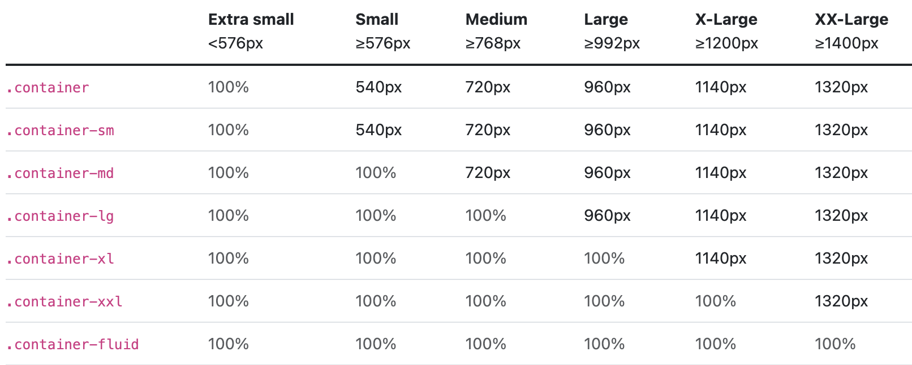

Bootsrap alapok
Bevezető
Úgy gondolod már tudod az alapokat egy weboldalkészítéssben? Tudsz magadtól csinálni CSS szabályokat? Akkor itt a remek alkalom, hogy megismerd a Bootsrap keretrendszert!
A Bootsrap egy CSS/Javascript-re alapuló Front-End keretrendszer mely lényegében sok száz css Class segítségével gyorsabban haladhatsz és megelőzheted az unalmas hosszú CSS szabályok létrehozását. DRY!
A letöltése sokféleképpen megoldható, ezt a következő blokkban meg is találhatod.
ITT az eredeti Bootstrap részletes dokumentációt is megtalálhatod.
Letöltés
Ezen linken letudod tölteni a Javasript és a CCS fájlt majd betudod illeszteni egyből a weboldaladba.
Ha kevés a tárhelyed vagy bármi egyéb indokból nem tudod letölteni, használd a JSDeliver oldalán lévő autómatikusan frissítődő Bootsrap keretrendszerét. az egész annyiból áll hogy csak két sort be kell illesztened a weboldaladba és rögtön használhatod is!
<link href="https://cdn.jsdelivr.net/npm/bootstrap@5.2.0-beta1/dist/css/bootstrap.min.css" rel="stylesheet" integrity="sha384-0evHe/X+R7YkIZDRvuzKMRqM+OrBnVFBL6DOitfPri4tjfHxaWutUpFmBp4vmVor" crossorigin="anonymous">
<script src="https://cdn.jsdelivr.net/npm/bootstrap@5.2.0-beta1/dist/js/bootstrap.bundle.min.js" integrity="sha384-pprn3073KE6tl6bjs2QrFaJGz5/SUsLqktiwsUTF55Jfv3qYSDhgCecCxMW52nD2" crossorigin="anonymous"></script>Szöveg igazítása
A szöveg igazítása osztályok segítségével könnyedén igazíthatja a szöveget a komponensekhez. A kezdő-, vég- és középre igazításhoz reszponzív osztályok állnak rendelkezésre, amelyek ugyanazokat a nézetablak-szélesség töréspontokat használják, mint a rácsrendszer.
<p class="text-start">Start aligned text on all viewport sizes.</p>
<p class="text-center">Center aligned text on all viewport sizes.</p>
<p class="text-end">End aligned text on all viewport sizes.</p>
<p class="text-sm-start">Start aligned text on viewports sized SM (small) or wider.</p>
<p class="text-md-start">Start aligned text on viewports sized MD (medium) or wider.</p>
<p class="text-lg-start">Start aligned text on viewports sized LG (large) or wider.</p>
<p class="text-xl-start">Start aligned text on viewports sized XL (extra-large) or wider.</p>
Színek
Jelentést közvetíthet a színeken keresztül egy maroknyi színhasználati osztály segítségével. Tartalmazza a lebegő állapotú linkek formázásának támogatását is.
Szinezési kódok
Jó tudni! ezeket a szövegedbe bármikor beletudod illeszteni a class megadásával, akár háttérszín lehet akár szövegszín!
Konténerek
A konténerek a Bootstrap alapvető építőkövei, amelyek tartalmazzák, kitöltik és igazítják a tartalmat egy adott eszközön vagy nézetablakon belül.
Hogyan működnek?
A konténerek a Bootstrap legalapvetőbb elrendezési elemei, és az alapértelmezett rácsrendszer használatakor szükségesek. A konténerek a bennük lévő tartalom befogadására, kitöltésére és (néha) középre helyezésére szolgálnak. Bár a konténerek egymásba ágyazhatók, a legtöbb elrendezés nem igényel egymásba ágyazott konténert.
Alap konténer
Az alapértelmezett .container osztályunk egy reszponzív, fix szélességű konténer, ami azt jelenti, hogy a maximális szélessége minden töréspontnál változik.
Reszponzív konténer
A reszponzív konténerek lehetővé teszik egy olyan osztály megadását, amely 100%-os szélességű a megadott töréspont eléréséig, majd ezt követően minden egyes magasabb töréspontra max-szélességet alkalmazunk. Például a .container-sm kezdetben 100%-os szélességű, amíg el nem éri az sm töréspontot, ahol az md, lg, xl és xxl méretezéssel növekszik.
Szegélyek
A szegélyek a beállíthatók, törölhetők, színezhetők, kerekíthetők.
Megadó
Elvonó
Színezés
Lekerekítés
Jó tudni!ezeket a szövegedbe bármikor beletudod illeszteni a class megadásával.
Ikonok
Az ikonok BootStrap-ben, verzionként változik.
BootStrap 3
Az ikonok használatához a glyphicon osztályra van szükségünk. Ez az osztály csak a bootstrap 3-as verzióig támogatott, a 4-es verzióban már nem használhatjuk. Természetesen az ikonokat több elemre is rá lehet tenni, például gombokra. Ilyenkor az ikont <span></span> elemre tesszük
<button type="button" class="btn btn-default"><span class="glyphicon glyphicon-search"></span> Keresés</button>
<button type="button" class="btn btn-default"><span class="glyphicon glyphicon-play"></span> Lejátszás</button>
<button type="button" class="btn btn-default"><span class="glyphicon glyphicon-new-window"></span> Új ablak</button>BootStrap 5
BootStrap 5-ben az ikonokat (NPM-eket) letöltjük vagy belinkeljük.
<link rel="stylesheet" href="https://cdn.jsdelivr.net/npm/bootstrap-icons@1.8.3/font/bootstrap-icons.css">A már letöltött vagy belinkelt ikonokat használhatjuk, akár színezve is.
Fejléc
Kisebbb fejléc
Szöveg között
<h1><i class="bi-alarm"></i> Fejléc</h1>
<h3><i class="bi-alarm" style="color: rgb(205, 226, 19);"></i> Kisebbb fejléc</h3>
<p>Szöveg<i class="bi-alarm" style="color: rgb(180, 20, 20);"></i> között</p>
<p><a href="https://github.com/twbs/icons/releases/tag/v1.8.3">Akár linkekben is <i class="bi-alarm"></i></a></p>
<button type="button"><i class="bi-apple"></i> Ja ez egy gomb</button>Jó tudni! az ikonok sokoat segíthetnek a weboldalon való navigációban.
A Bootsrap verziói között sok változtatás van, a legfontosabb a reszponzívitásért (layout manager) felelős részét megjegyezni. A többit verzionként változhat, de az egyszerű osztály jelölőkből is érdemes párat tudni, mert megkönnyitheti az életedet. A többi csak részlet kérdése.